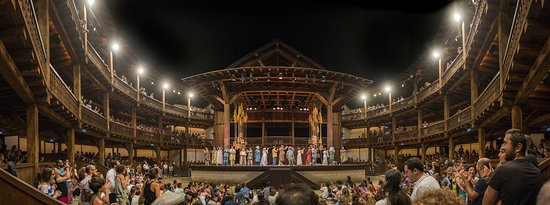

La commedia degli errori
di W. Shakespeare
Globe Theater
Come funziona? Semplice!
-
Cliccate una delle date tra quelle disponibili nel calendario.
-
Fate uno screenshoot ed inviatemelo: non appena saranno disponibili i biglietti ve li verrò a
consegnare iomemmedesimo direttamente a casa (ogni scusa è buona per vederci!).
Luglio
|
4
|
5
|
6
|
7
|
8
|
9
|
10
|
|
11
|
12
|
13
|
14
|
15
|
16
|
17
|
|
18
|
19
|
20
|
21
|
22
|
23
|
24
|
|
25
|
26
|
27
|
28
|
29
|
30
|
31
|
Tantissimi auguri, vi vogliamo bene!
Ludo e Mari